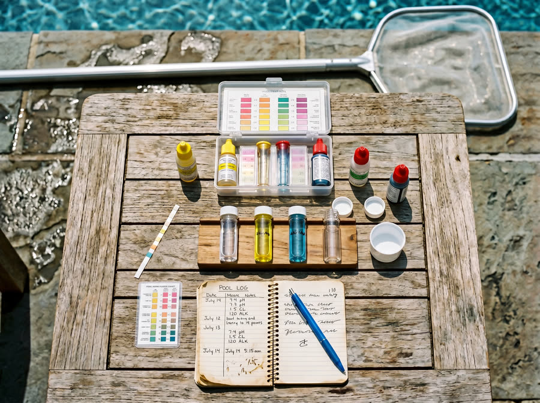

Checklist
The Texas-summer pool maintenance checklist
A downloadable, stick-on-the-fridge checklist.
Texas heat, oak pollen, and hard Brazos Valley water make pool care here fundamentally different. Here's the honest answer on cadence.
If you've moved to Bryan or College Station from somewhere cooler — or you've just bought your first pool — the number-one question we get is: "How often should I actually be cleaning this thing?" The advice you'll find online is generic, written for generic climates. The Brazos Valley is not a generic climate. Here's what actually works.
For 95% of Bryan-College Station pools, the right cadence is weekly service. Not every other week. Not every three weeks. Every week, same day. Here's why.
Summer UV index in College Station regularly hits 10 or 11 — that's "extreme." High UV burns off chlorine fast. Without adequate cyanuric acid (CYA, aka stabilizer) and weekly top-ups, you can lose most of your free chlorine in 3-4 days. That's why bi-weekly pools tend to turn by day 10.
Oak pollen in March and April is aggressive here. A single windy week can fill your skimmer baskets four times over and drop visible pollen scum onto your water line. Skipping a week during pollen season is how you get to a stained waterline and a phosphate problem.
Municipal water in Bryan-College Station runs hard — we routinely measure 250–400 ppm calcium hardness right out of the tap. Without weekly chemistry management, scale builds on tile, inside pipes, and on heater elements. Weekly service catches rising calcium early and uses sequestering agents before you see damage.
Some services will sell you every-other-week at a discount. Do the math over a year:
By year-end, bi-weekly costs more. And you had a cloudy pool half the time.
There are a few cases where bi-weekly is fine:
If you're hiring it out, make sure "weekly service" includes all of this — not just a quick skim:
That's exactly what our weekly pool cleaning program includes, for the record.
The pool that breaks you financially isn't the one you spent too much on — it's the one you ignored for three weeks in July.
In Bryan-College Station: weekly service, every week, same day. Over a year it's cheaper, cleaner, and protects your equipment better than any other cadence.
Want a flat-rate quote for your specific pool? Send us your details or call (979) 253-4801 — we'll come take a look and give you a number, no pressure.